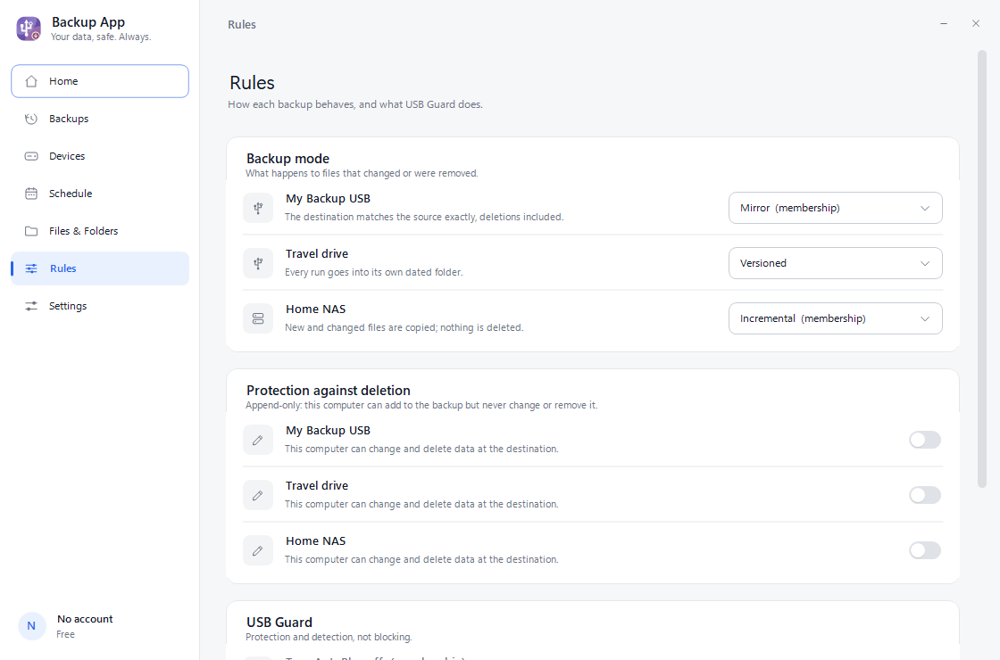

Ana sayfa ›
Belgeler
Belgeler
Uygulamanın nasıl çalıştığı, deposunun biçimi ve uygulama olmadan yedeğe nasıl ulaşacağın.
Her hedef için ayrı davranış
Beş mod var. Hangisinin ne yaptığı arayüzde tek cümleyle yazar; belgeye bakman gerekmez.
| Mod | Ne yapar | |
|---|---|---|
| Sadece Ekle | Yalnızca yeni dosyalar eklenir; var olana dokunulmaz. | Ücretsiz |
| Sürümlü | Her çalışma kendi tarihli klasörüne gider; geçmiş korunur. | Ücretsiz |
| Artımlı | Yeni ve değişen dosyalar eklenir; hiçbir şey silinmez. | Üyelik |
| Ayna | Hedef kaynakla birebir olur; kaynakta silinen hedeften de silinir. | Üyelik |
| Tam Yenile | Eski yedek silinir, kaynak baştan kopyalanır. | Üyelik |

Kurallar sayfası: mod, silme koruması ve USB Guard tek yerde.
Kurtarma aracı nasıl kullanılır
ubk-recover.exe kurulum istemez, tek dosyadır ve yalnızca okur — bir yedeği asla değiştirmez.
ubk-recover.exe list --repo D:\Backup
ubk-recover.exe fetch --repo D:\Backup --out C:\KurtarilanParola sorulduğunda ekrana yazılmaz. Yanlış parolada 'açılamadı' der ve durur.